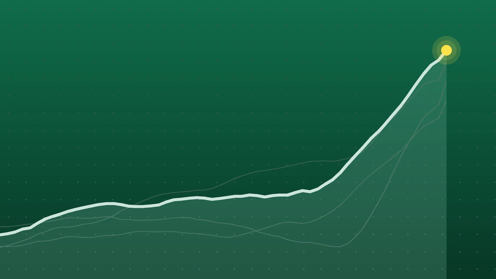

SportsExplainer
Sports Scores, Oct. 21: Other Results From NHL, Tennis and More
A rookie’s first NHL goals, a frosty homecoming in Ottawa and a retirement in Ningbo that settled the last WTA Finals place. Here is everything else that finished on Wednesday.

Quick take
- Ottawa beat Florida 5-1 in Brady Tkachuk’s first game back in Ottawa, and Philadelphia won 3-1 in Buffalo behind two goals from rookie Cole Knuble.
- Marta Kostyuk retired from her Ningbo Open match against Ekaterina Alexandrova, which gave Karolina Muchova the last place at the WTA Finals.
- Adrian Mannarino upset Andrey Rublev in Almaty, and Stan Wawrinka won a third-set tiebreak in Lyon.
- FC Cincinnati beat D.C. United 2-1, New Mexico State beat Sam Houston 30-24, and Afghanistan beat Bangladesh by seven wickets.
Why it's trending Wednesday, Oct. 21, had two NHL games, five tour-level tennis events, one MLS makeup game, one FBS game and a men’s ODI between full-member nations.
Other sports results for Oct. 21
The loudest night belonged to Ottawa. Brady Tkachuk, the Senators’ former captain, scored on a power play in his first game back at Canadian Tire Centre as a Florida Panther, but Ottawa answered with five straight goals in a 5-1 win, NHL.com reported. Fans chanted at him and threw his old jerseys onto the ice, according to AP.
In tennis, the season-ending WTA Finals field was settled without a ball struck by the player who claimed the last spot. Marta Kostyuk retired after a medical timeout, down a set to Ekaterina Alexandrova in Ningbo, which locked in Karolina Muchova as the eighth qualifier, AP reported.
This roundup collects every Wednesday result in our tracked leagues that didn’t have three or more games of its own. The NBA and Champions League have separate roundups: NBA scores for Oct. 21 and Champions League scores for Oct. 21.
NHL
| Winner | Score | Loser | Note |
|---|---|---|---|
| Philadelphia Flyers | 3-1 | at Buffalo Sabres | Cole Knuble scored his first two NHL goals; Dan Vladar made 27 saves |
| Ottawa Senators | 5-1 | Florida Panthers | Five straight Ottawa goals after Tkachuk’s opener |
WTA tennis
Ningbo Open (WTA 500), round of 16
| Winner | Score | Loser |
|---|---|---|
| Marie Bouzkova | 7-5, 6-2 | Anastasia Zakharova |
| Leylah Fernandez | 7-5, 6-7 (3), 6-3 | Aliaksandra Sasnovich |
| Sara Bejlek | 7-6 (3), 6-4 | Sorana Cirstea (8) |
| Ekaterina Alexandrova | 6-4, retired | Marta Kostyuk (3) |
Japan Women’s Open, Osaka (WTA 250), round of 16
| Winner | Score | Loser |
|---|---|---|
| T. Gibson (4) | 6-2, 6-1 | S. Kraus |
| L. Tagger | 7-5, 6-3 | T. Valentova |
| K. Boulter (8) | 6-2, 6-1 | V. Golubic |
| A. Krueger | 6-3, 6-1 | L. Tararudee |
ATP tennis
European Open, Brussels (ATP 250)
| Winner | Score | Loser |
|---|---|---|
| F. Cerundolo (3) | 6-4, 7-6 (4) | M. Damm |
| T. Griekspoor | 7-6 (4), 7-5 | M. Navone (8) |
| C. Chidekh | 7-6 (4), 6-2 | J. Fearnley |
| J. Struff | 6-4, 6-2 | G. Onclin |
| D. Goffin | 3-6, 6-3, 6-4 | R. Bertola |
| D. Dzumhur | 7-6 (5), 2-6, 6-2 | D. Prizmic |
Almaty Open (ATP 250)
| Winner | Score | Loser |
|---|---|---|
| J. Duckworth | 7-5, 7-6 (7) | L. Darderi (2) |
| A. Mannarino | 6-4, 3-6, 6-3 | A. Rublev (4) |
| S. Tsitsipas (7) | 6-1, 6-2 | M. Kukushkin |
| N. Basilashvili | 6-2, 6-4 | F. Diaz Acosta |
| T. Machac | 6-2, 6-0 | Z. Nurlanuly |
| M. Bellucci | 7-6 (5), 2-6, 6-4 | T. Etcheverry (6) |
Lyon Open (ATP 250)
| Winner | Score | Loser |
|---|---|---|
| S. Wawrinka | 6-3, 6-7 (2), 7-6 (5) | M. Landaluce |
| C. Moutet | 6-4, 6-4 | F. Balshaw |
| L. Musetti (6) | 6-4, 6-4 | M. Kouame |
| T. Paul (4) | 6-4, 6-7 (4), 6-3 | B. Bonzi |
Tennis scores are from the ATP Tour’s results pages, the WTA’s official draw sheets and Tennis Tour Calendar’s daily results. Seeds are in parentheses.
MLS, college football and cricket
| Competition | Result | Note |
|---|---|---|
| MLS | FC Cincinnati 2, D.C. United 1 | Makeup of a postponed Sept. 5 game; Teenage Hadebe scored the winner |
| FBS college football | New Mexico State 30, at Sam Houston 24 | James Jones ran for 178 yards and a touchdown |
| Men’s ODI | Afghanistan 161-3 beat Bangladesh 160 by seven wickets | Rashid Khan took 4 for 31 in Sharjah |
Senators 5-1 Panthers: a hostile homecoming
Tkachuk’s power-play goal gave Florida the lead, and for a moment it looked like the night might go his way. Instead, Stützle, Giroux, Pinto, Foegele and Halliday scored for Ottawa, the last two while short-handed, NHL.com reported. The win lifted the Senators to 7-3-0, and Florida fell to 5-3-2.
The win had a cost for Ottawa. Goaltender Linus Ullmark, who leads the NHL in wins, left 3:25 into the third period with a lower-body strain, and Senators coach Travis Green said he would be reassessed Thursday.
Flyers 3-1 Sabres: Knuble’s first goals
Cole Knuble, playing his second NHL game, scored twice, and the Flyers won for the third game in a row, AP reported. That streak comes after an 0-6-3 start, so Philadelphia has taken six of its nine points this season in the last three games. The Flyers are 3-6-3, and Buffalo is 4-4-2.
Tennis: Muchova in, Rublev out
Muchova’s qualification fills the eight-player WTA Finals field, which plays Nov. 8-15 in Indian Wells, California, according to AP. In Ningbo, Fernandez needed three sets to beat Sasnovich and will meet Alexandrova in the quarterfinals, and Bouzkova and Bejlek set up an all-Czech quarterfinal.
On the men’s side, the biggest upset came in Kazakhstan, where Mannarino beat fourth-seeded Rublev in a match that took 2 hours, 16 minutes, according to Tennis Majors. Kukushkin, a wild card playing at home in Almaty, lost to Tsitsipas in what Tennis Majors described as the final match of his career. Three seeds lost on Wednesday in Almaty alone: Darderi, Rublev and Etcheverry.
What it means
- MLS playoff race: the win moved Cincinnati to 39 points and eighth in the Eastern Conference with four games left, the Cincinnati Enquirer reported. D.C. United are on 33.
- Conference USA: New Mexico State improved to 3-4 (2-1 in conference), while Sam Houston dropped to 1-6 (0-3) with a fourth straight loss, Sam Houston’s athletics site reported.
- Cricket: the result sent Afghanistan to the tri-series final in the UAE, according to ESPNcricinfo.
What’s next
- NHL: 12 games on Thursday, Oct. 22, starting at 7 p.m. ET, including the Rangers at Toronto and Florida at Pittsburgh. Ottawa hosts San Jose at 7 p.m. ET.
- Tennis: the Ningbo quarterfinals, including Fernandez vs. Alexandrova and Bejlek vs. Bouzkova, are Friday, Oct. 23.
- MLB: World Series Game 1 between the Rays and Brewers is Friday, Oct. 23. See our World Series preview.
- Formula 1: the U.S. Grand Prix weekend in Austin runs Oct. 23-25.
Sources
- NHL.com Knuble nets first two NHL goals, Flyers defeat SabresOct. 22, 2026
- Associated Press via WHAM Flyers rookie Cole Knuble scores first 2 career goals in 3-1 victory over SabresOct. 22, 2026
- NHL.com Senators roll past Panthers in Brady Tkachuk's return to OttawaOct. 22, 2026
- Associated Press via Yahoo Sports Senators beat Panthers 5-1 as Brady Tkachuk scores in return to Ottawa but gets hostile receptionOct. 22, 2026
- Associated Press via Yahoo Sports Muchova secures the last WTA Finals spot after Kostyuk retires at Ningbo OpenOct. 21, 2026
- Tennis Tour Calendar 2026 Ningbo Open Daily Schedule, Order of Play and ResultsOct. 22, 2026
- Tennis Tour Calendar 2026 WTA Japan Open Daily Schedule, Order of Play and ResultsOct. 22, 2026
- WTA Kinoshita Group Japan Open singles drawOct. 21, 2026
- ATP Tour BNP Paribas Fortis European Open resultsOct. 22, 2026
- ATP Tour Almaty Open resultsOct. 22, 2026
- Tennis Tour Calendar 2026 Lyon Open Daily Schedule, Order of Play and ResultsOct. 22, 2026
- FC Cincinnati RECAP | FC Cincinnati 2, D.C. United 1Oct. 21, 2026
- Cincinnati Enquirer via Yahoo Sports Two players score their first goal for FC Cincinnati in huge winOct. 22, 2026
- Sam Houston Athletics NM State pushes past Sam Houston 30-24Oct. 21, 2026
- The Sports Tak Afghanistan vs Bangladesh Match 3 Highlights 2026: Afghanistan beat Bangladesh by 7 wicketsOct. 21, 2026
- Tennis Majors Adrian Mannarino vs Andrey Rublev - Almaty Open round of 16Oct. 21, 2026
- Tennis Majors Atmane outlasts Bellucci in three tiebreaks to reach Almaty quarterfinalsOct. 22, 2026
- ESPNcricinfo AFG vs BAN 3rd Match Match Report - Rahmat, Rashid knock Bangladesh out and send Afghanistan to finalOct. 21, 2026
Keep reading

Champions League Scores, Oct. 21: Rice Rescues Arsenal at Bayern
Champions League scores for Oct. 21, 2026: all nine Matchday 3 results, from Bayern 2-2 Arsenal and Real Madrid 4-1 Leipzig to Como’s 4-1 rout of Man United.

Europa League Scores, Oct. 22: Bournemouth Beat 10-Man Milan 3-0
Europa League scores for Oct. 22, 2026: all 18 Matchday 3 results, including Bournemouth 3-0 Milan, Beşiktaş 2-2 Crystal Palace and Hoffenheim 3-0 Lyon.

NBA Scores, Oct. 21: Edwards’ 45 Spoils Giannis’ Heat Debut
NBA scores for Oct. 21, 2026: all 11 final results, including Anthony Edwards’ 45 in Miami, Ty Jerome’s 45 for Memphis and Raptors 135, Bulls 92.